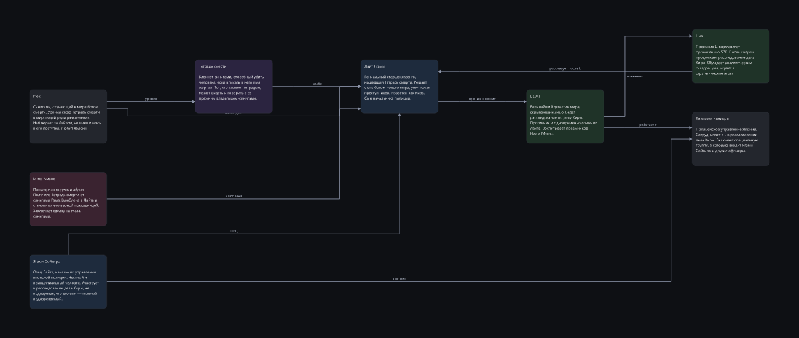
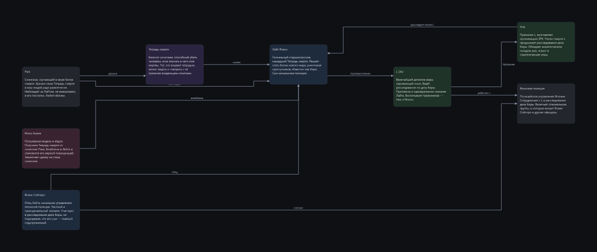
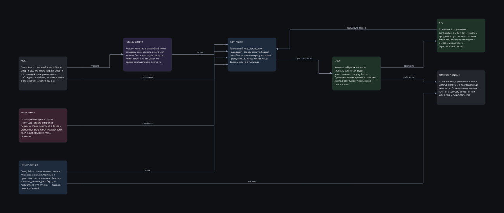
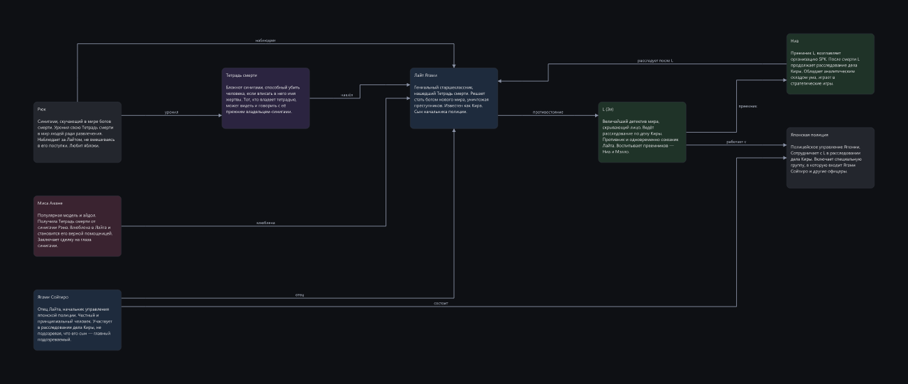

Одна расстановка, четыре способа провести линии
Блоки во всех картинках стоят одинаково — это наша раскладка, и она здесь не
сравнивается: смысловая расстановка и есть то, ради чего система существует. Различается
только прокладка линий.
Клик по картинке открывает её целиком.
E08/wiki-anime
наш роутер 43/100 штраф 33.3 · пересечений 5 · изгибов 10

наш роутер + перебор портов 62/100 штраф 15.3 · пересечений 2 · изгибов 11

libavoid сам выбирает точки крепления 27/100 штраф 68 · пересечений 8 · изгибов 0

libavoid рисует, порты перебираем мы 97/100 штраф 0.7 · пересечений 0 · изгибов 11

E08/dense-arch
наш роутер 17/100 штраф 120 · пересечений 25 · изгибов 20
наш роутер + перебор портов 29/100 штраф 62 · пересечений 12 · изгибов 18
libavoid сам выбирает точки крепления 17/100 штраф 124 · пересечений 19 · изгибов 2
libavoid рисует, порты перебираем мы 46/100 штраф 29 · пересечений 7 · изгибов 17
E08/tree-org
наш роутер 76/100 штраф 8 · пересечений 2 · изгибов 8
наш роутер + перебор портов 100/100 штраф 0 · пересечений 0 · изгибов 8
libavoid сам выбирает точки крепления 100/100 штраф 0 · пересечений 0 · изгибов 1
libavoid рисует, порты перебираем мы 100/100 штраф 0 · пересечений 0 · изгибов 6